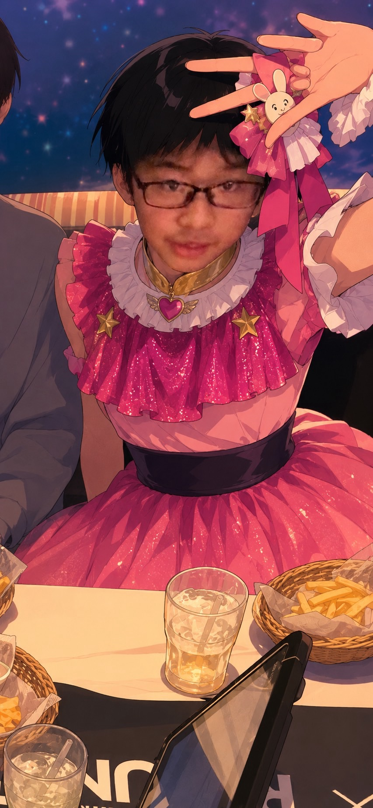

STORY
ある冬の日、胎児の子は「外の世界の音」をはっきりと意識した。 遠くで誰かが笑っているような声、何かが動く気配。 その瞬間、「この世界、楽しそうだな」と思った。
胎内から始まる物語。その視点で世界を見るアイドルプロジェクト。

※画像は後日差し替え予定。現在は仮ビジュアルです。
胎児の子は、「生まれる前の視点」から世界を見つめるアイドルプロジェクト。 まだ何も知らない存在が、外の世界に興味を持ち、少しずつ歩み始める。 その過程を、音楽と物語で記録していく試みです。
名前：胎児の子 誕生日：1月31日 趣味：ゲーム 特技：羊水で水泳 好きなもの：マトリョーシカ 苦手なもの：浅野
胎児の子のコンセプトは、「胎内の静けさ」と「外の世界への憧れ」の両立。 生まれる前の存在は、世界を直接見ることはできない。 しかし、音や気配、断片的な情報だけで、外側を想像し続けている。
ある冬の日、胎児の子は「外の世界の音」をはっきりと意識した。 遠くで誰かが笑っているような声、何かが動く気配。 その瞬間、「この世界、楽しそうだな」と思った。
1st Single「アイドル」 収録曲：アイドル / GEMN / ファタール / TEST ME
2026.01：胎児の子、外の世界の音を意識し始める。 2026.02：マトリョーシカと出会う。 2026.03：ファンの呼称「迷える子羊」が決定。
・薄暗い部屋の中、モニターの光だけが胎児の子の横顔を照らしている。 ・マトリョーシカを抱えてじっと見つめている姿。
「迷える子羊のみんなへ。ここまで読んでくれてありがとう。」
Q：このサイトは本物の公式サイトですか？ A：設定上の公式サイトです。